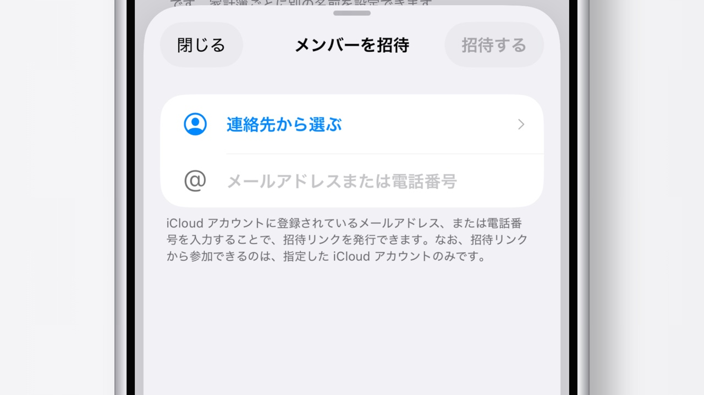

家族やパートナーと、
ひとつの家計簿を
共有家計簿を使うと、家族やパートナーと同じ家計簿を、 それぞれのiPhoneから記録・確認できます。 誰が記録したかも表示されるので、 「これ、何に使ったんだっけ？」の確認もスムーズです。

今回のコツ
- 共有家計簿は、個人の家計簿とは別に作成されます。 個人の家計簿の記録が、相手に見えることはありません。
- 記録には追加したメンバーの名前が表示されるので、 誰の支出かがひと目で分かります。
- 作成には Lilt Plus が必要ですが、招待されて参加する方は加入不要です。
共有家計簿を作成して招待する
共有家計簿の作成は、 Lilt Plus 限定の機能です。
- 設定の 「共有家計簿」 を開き、「新しい共有家計簿を作成」をタップします。
- 家計簿の名前を入力し、 「新規で始める」か「既存の家計簿からコピー」を選んで作成します。
- 作成した家計簿の「メンバーを招待」から、 相手の iCloud に登録されているメールアドレス、 または電話番号を入力して「招待する」をタップします。
- 発行された参加URLを、メッセージやメールで相手に送ります。
招待された側の参加方法
届いたURLをタップすると、Liltが開いて共有家計簿に参加できます。 参加URLは、招待時に指定した iCloud アカウントでのみ使えます。
家計簿の切り替え
画面右上の人型アイコンをタップすると、 個人の家計簿と共有家計簿をいつでも切り替えられます。 共有家計簿を開いているときは、アイコンが2人の青いマークに変わります。
表示名は家計簿ごとに設定できます
記録に表示されるあなたの名前は、 設定の「共有家計簿」から家計簿ごとに変更できます。 家族用では家での呼び名、友人用ではニックネームなど、 相手に合わせて使い分けられます。
補足
共有家計簿のデータは、iCloud を通じて参加メンバー間で同期されます。 オーナーの Lilt Plus の有効期限が切れた場合、 共有家計簿は読み取り専用になり、 Lilt Plus を再度有効にすると再び編集できるようになります。